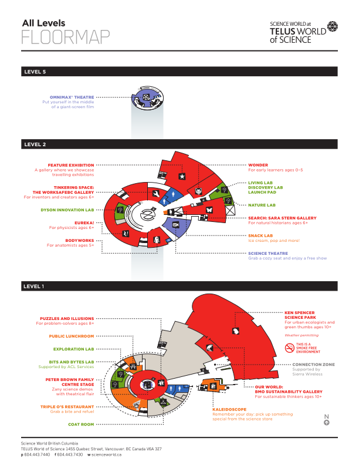

Featured visual
StagePulse Map
Real Science World map asset from the 2nd-place hackathon build.
N8N / AI AGENTS / GITHUB / VERCEL
I help founders, creators, and small businesses turn repetitive research, follow-up, and content work into practical AI workflows.
Built with n8n or focused GitHub + Vercel apps. Small scope, clear function, clean launch.
Services, demos, publication, contact.

Real Science World map asset from the 2nd-place hackathon build.

Custom automations for real tasks.

AI workflow builder

Compact tools, clear inputs, usable outputs.
Custom AI agent builds through n8n, plus focused GitHub + Vercel web app design and installation.
One job. Small scope. Clean launch.
I start with one repetitive task, one useful output, and one clean deployment path.
Service packages first. Live examples below.
Build one custom AI agent around a real task.
Best for: follow-up, research, summaries, and ops.
Design a focused web app around one workflow.
Best for: internal tools, demos, and AI utilities.
Set up, deploy, and hand off the app cleanly.
Best for: founders, creators, and small teams shipping fast.
These demos show the kind of tools, workflows, and product surfaces I can ship.
XuLan is the public identity for my AI automation notes, source packs, and workflow tutorials.
I treat agents as scoped workflow systems, not vague magic.
Good agents should do one clear job well.
Outputs should stay easy to check, edit, and trust.
Useful systems turn scattered information into usable context.
Small, usable systems beat oversized AI promises.
I also have a Proc. SPIE publication comparing CNN models and a Swin Transformer for facial expression recognition.
MobileNetV2, VGG-16, ResNet, and Swin Transformer compared on FER2013.
Open the full publication page for the abstract, method, and related demo.
I focus on practical AI systems, usable interfaces, and clear output.
Start with a short audit or send the workflow idea by email.
Research, pre-call prep, follow-up, summaries, and simple AI utilities.
We map one task and decide if automation is worth building.
The booking page uses your Google Appointment Schedule embed, with a direct fallback link.